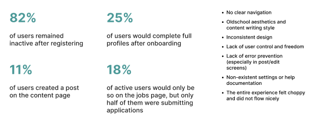

LeapGrad
Role, Tools, & Duration
UX Researcher & Designer
User Research, User Interviews, Data Synthesis, User Testing, Product Design
Figma, Miro, SurveyMonkey
Nov 2020 — March 2020
Overview
LeapGrad is a digital start-up based in Toronto, and is creating a two-sided student networking platform, targeted to both students and employers. This platform addresses the problem of the student job search and networking experience, and how platforms like LinkedIn currently don’t prioritize or motivate students in this process. As a UX researcher & designer, I analyzed the existing platform, and what can be improved in order to support its organization's goal of improving the student job search and networking experience.
Challenge
Redesign the LeapGrad platform to increase user activity among key platform features.
Process
Discovery → Understanding Users → Defining the Problem → Defining Redesign Goals → Explorations → Proposed Solution → Development → Shipped
Current Platform Analysis
When I first joined LeapGrad, they had over 1000 registered users on their web and mobile platfrom (this case study will focus on the mobile interface), with three core features shown below: profile page, content feed (to upload and view photos/videos), and a jobs page.

I conducted a Heuristic Analysis of the site, as well as synthesized user data analysis from web analytics, with key findings summarized below. My goal for the following steps was to uncover why this inactivity was taking place, and what underlying issues were. 
Understanding the User
After understanding the level of inactivity on the different features, my goal was to uncover why this inactivity was taking place. Therefore, when I conducted user interviews and testing sessions, I not only wanted to understand the interaction problems with the current platform, but also go back to the orginal problem space, uncovering pain points, motivations, and why competitors are failing to provide this experience.
Defining Pain Points
At this stage, I synthesized all the data from my own analysis + user interview results, where I determined pain points in four key sections.
Redesign Goals (Success Criteria)
Based off the pain points, I determined four key goals that would be necessary for the core features of LeapGrads platform going forward, and would measure the success of the project:
- Provide a relatable content feed to students
- An aesthetic and appealing profile
- A compelling and focused jobs page
- A way for users to curate their portfolio
Explorations
Within the ideation phase, I explored a variety of different ideas on features that can improve the platform. While I had a lot of fun with this stage, it was also challenging to determine the best course of action, and prioritizing the potential implementations.
Content Feed Explorations
I explored many different types of feeds, comparing to existing social media platforms (Instagram, Twitter, Linkedin, Reddit, Clubhouse), and what type of feed users would prefer and relate to.
Gamification Methods
I explored a variety of gamification methods and features, including features like badges, leadership boards, point systems, progress bars, referral systems, etc.
Coffee Chats
A coffee chat/mentorship feature would allow users to be introduced to each other more naturally and effectively, removing the awkward initial requests and cold introductions.
Final Designs

1 — Profile with Projects
- Research showed that users like to present themselves in a way that’s pleasing to them, and tend to spend a lot of time admiring their own profile and making sure it’s set up aesthetically.
- With this new design, students enjoy creating a personable profile that they can be proud of.
- Adding a projects section onto profile allows for portfolio creation, and increased interest and interaction with other user profiles .
Results:
2 — Focused Jobs
- The redesign jobs page takes consideration into what users expressed to be most important when applying to jobs.
- Users can see jobs curated for them, and how well of a match they are for the job, and are able to manage applications.
Results:
3 — Threads
- Students seek a relatable content feed, where they can seek advice, learn from others.
- Allows for casual and natural networking, easier to make meaningful connections, and create a student community.
- Users are very excited for this feature, and in preparation we sent out a questionnaire asking what topics they would like to see with positive responses
Reflections + Next Steps
As my first UX role after completing my undergraduate degree, I was able to apply my skills when leading the platform's redesign. Gaining thorough experience in all aspects of research and design process- from discovery to shipment- I now have a strong understanding of best methods and practices when attempting to understand user needs and pain points. I am most proud of the fact that I was able to define the organizations UX practices, and reconstructed the approach for how they approach new ideas, including workflow and design handoff. Next steps for this project would be analyzing each feature and how it is performing, talking to users, and evaluating new avenues for improvement.